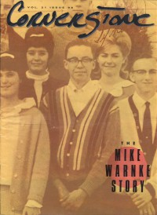

CMnexus
:
Contemporary Christian culture, music, and media.
Magazines
Profiles
Dove Awards
cmnexus.org
CM
nexus
→
Profiles
→
H
→
Mike Hertenstein
Mike Hertenstein
Writing credits listing
1985
in
Cornerstone
13.73
"On Location: Rez Band Goes Video With 'Crimes'"
Resurrection Band
Interview:
Darrell Mansfield
Interview:
W.A.S.P.
(Blackie Lawless)
1985
in
Cornerstone
14.76
"Turn Your Video On"
Resurrection Band
music videos
1985
in
Cornerstone
15.78
Eternal Vision
-
Special Deliverance
1985
in
Cornerstone
15.79
Interview:
Violent Femmes
1987
in
Cornerstone
15.82
Interview:
Rick Cua
1987
in
Cornerstone
16.83
"Rediscovering The Quarry From Which Rock Was Hearn"
Stairway to Heaven

1992
in
Cornerstone
21.98
"Selling Satan"
Mike Warnke
1997
in
Cornerstone
26.111
"Imaginarium '96: It Was A Good Year"
Cornerstone
CMnexus
(noun)
The magazine index
of modern music
and Christianity
© 2011 CMnexus. Last updated May 2025.
Contact:
Rants and other correspondence to:
editor -AT- cmnexus
-DØT- org
About